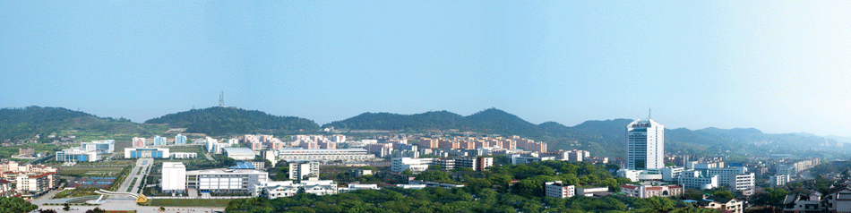

2015管理分析国际论坛
International Forum for Management Analysis

IFMA微信

- 
| 2015年11月18日 | |
|---|---|
| 时间 | 议程 |
| 15:30-21:30 |
会议注册报到（开放至整个会议期间） |
| 2015年11月19日 | |
| 08:30-09:00 |
开幕式（领导致辞） |
| 09:00-09:15 | 参会人员合影 |
| 09:15-10:15 |
大会主题报告一 报告人：：瑞士前国务卿，瑞士苏黎世联邦理工 大学 迈克.阿姆碧尔教授 报告题目：谈判工程 报告30-40分钟，问答20-30分钟 |
| 10:15-10:40 | 茶歇 |
| 10:40-11:40 |
大会主题报告二 报告人：瑞典财政政策委员会主席，斯德哥尔摩大学 约翰.哈斯勒教授 报告题目：金融危机下的瑞典财政政策 报告30-40分钟，问答20-30分钟 |
| 早上议程结束 | |
| 12:00-13:40 | 午餐:自助餐 |
| 14:00-15:40 |
分会场学术研讨会 分论坛一：群决策、谈判与冲突管理 分论坛二：管理创新与研究方法 分论坛三：企业管理与运营管理（含供应链与物流管理） |
| 15:40-16:00 | 茶歇 |
| 16:00-17:40 |
分会场学术研讨会 分论坛四：风险管理与应用系统分析（含环境与能源系统决策） 分论坛五：管理信息系统与数据挖掘 分论坛六：数量经济与金融分析 |
| 18:00-20:00 | 欢迎晚宴 |
| 2015年11月20日 | |
| 09:00-10:00 |
大会主题报告三 报告人：瑞士工程院院士，瑞士苏黎世联邦理工大学新加坡中心主任 汉斯.海尼曼教授 新加坡中心主任 报告题目：社会经济技术一体化未来风险研究 报告30-40分钟，问答20-30分钟 |
| 10:00-10:20 | 茶歇 |
| 10:20-11:20 |
大会主题报告四 报告人：胡汉辉 报告题目：现代评估方法与公司治理 报告30-40分钟，问答20-30分钟 |
| 11:20-11:50 | 大会专题讨论 |
| 早上议程结束 | |
| 12:00-13:30 | 午餐:自助餐 |
| 14:00-15:40 |
分会场学术研讨会 分论坛七：信息科学与服务 分论坛八：现代评估方法与公司治理 分论坛九：工业工程与先进制造管理 |
| 15:40-16:00 | 茶休 |
| 16:00-17:40 |
召开IFMA管理分析国际论坛委员会会议 1. 选择5篇大会优秀论文 2. 讨论下一年管理分析国际论坛的召开 |
| 16:40-17:40 | 大会优秀论文颁奖与选择报告 |
| 18:40-20:00 | 晚餐:重庆特色火锅 |
| 会议结束 | |